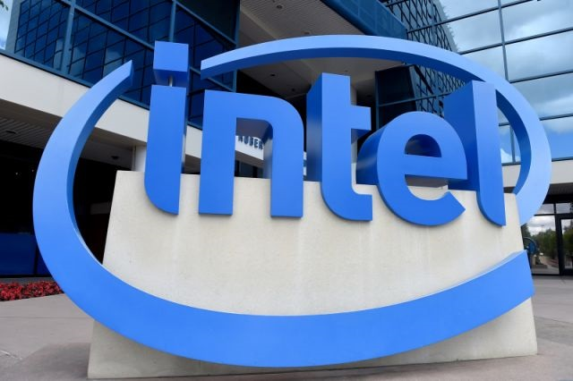
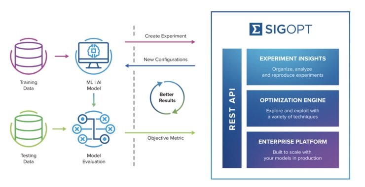

最近几个月半导体行业的大型并购频发，9 月英伟达宣布将以 400 亿美元现金加股票的形式收购 Arm。十月底，AMD 又宣布将以 350 亿美元收购赛灵思。紧接着，Marvell 也宣布将通过股票加现金的方式，以总价约 100 亿美元的价格收购模拟芯片制造商 Inphi。短短两个月就有总金额高达 850 以美元的收购交易。 相比之下，英特尔最新的收购看似不值得关注，但对其 AI 发展可能意义重大。

在过去的几年中，英特尔将其精力集中在专用芯片领域，包括专门为人工智能（AI）等产品设计的芯片。这家行业巨头最近进行了一项收购，这将有助于其在这一领域的努力。 英特尔周四宣布，它收购了总部位于旧金山的初创公司 SigOpt，这家公司的主要业务是创建用于建模和仿真的优化平台。目前尚不清楚交易的具体细节，已知的信息是，迄今为止 SigOpt 这家初创公司筹集的资金还不到 1000 万美元。
▲ 图片来自 SigOpt 官网
但是，SigOpt 服务了一些非常知名的大公司。这种支持使它得以开发出有趣的技术，这些技术现在将有助于推动英特尔 AI 芯片业务的发展。
专注于 AI
英特尔知道计算的世界正在发生变化。像 Nvidia、AMD 和 Arm 这样的竞争对手正在缩小与英特尔的性能差距，而这种差距过去一直是许多客户的关注点。考虑到这一点，英特尔正在利用即将到来的技术和优化的下一代芯片来推动 AI 的发展。 向 AI 的转型帮助该芯片巨头抵消了其传统业务的下降趋势。在第三季度，英特尔报告的收入为 183.3 亿美元，与去年同期相比下降了 3%，不过其每股收益积分复合分析师预期，英特尔最新一季财报下降的原因是其数据中心集团营收下降 7%。 然而，市场预测到 2024 年 AI 芯片市场的价值将超过 250 亿美元。随着行业的不断发展，以及 AI 在实际部署中逐步普及，英特尔将有更大的增长空间。 去年，英特尔的 AI 相关业务收入不到 40 亿美元。这是个不错的成绩，但 SigOpt 收购将帮助其在未来的 AI 市场大幅提高收入。 英特尔首席架构师和 GPU 高级副总裁 Raja Koduri 说：“ SigOpt 的 AI 软件平台和数据科学人才将扩大英特尔软件、体系结构、产品和团队，并为我们提供有价值的客户见解。”
SigOpt 带来了什么？
对于不熟悉的人来说，SigOpt 是一家初创公司，其使命是 “优化一切”。 考虑到人工智能的两个关键部分，也就是 SigOpt 建立的用于优化建模和仿真平台。这两个重要的部分也是英特尔将用于发展其 AI 的部分。

▲ 图片来自 SigOpt 官网
目前，这家初创公司为许多财富 500 强公司和研究机构提供服务。尽管其核心产品仍处于封闭测试阶段，但该初创公司还是从一些渠道中获得了投资。 这其中包括 CIA 的战略投资部门 In-Q-Tel，其他更多传统投资者包括 Andreessen Horowitz 和 Y Combinator。 尽管已被收购，但 SigOpt 发言人确认该初创公司将继续为现有客户提供服务。SigOpt 公司在声明中写道：“我们将继续与 SigOpt 的现有客户合作，并将技术整合到我们的产品路线图中。” 有趣的是，英特尔未来几年将如何利用该公司的资源，从而推动它成为世界领先的 AI 芯片提供商？